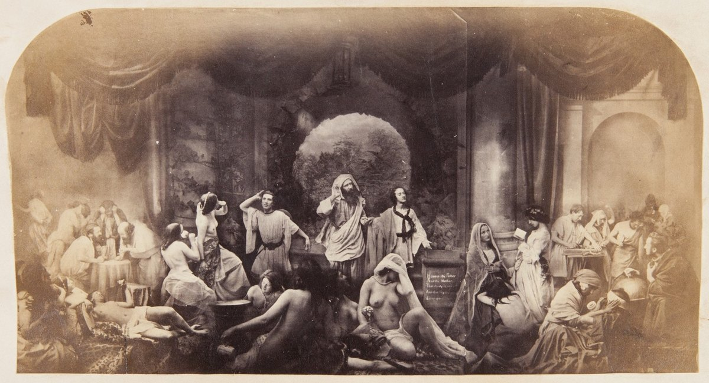
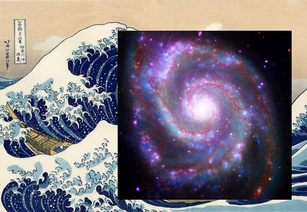
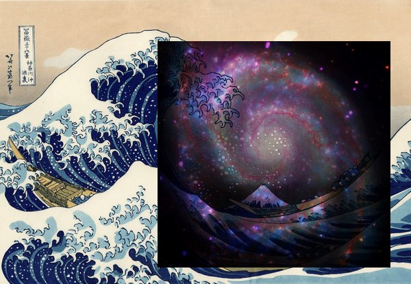
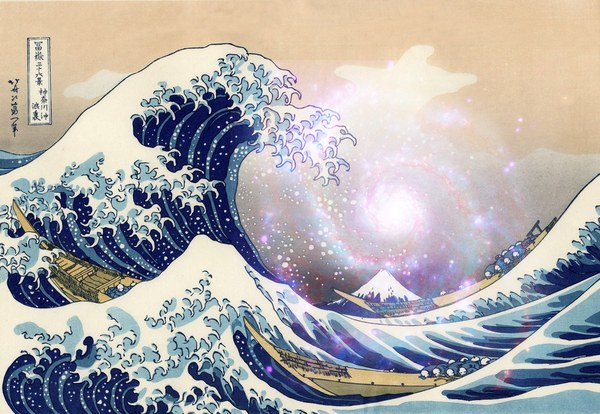
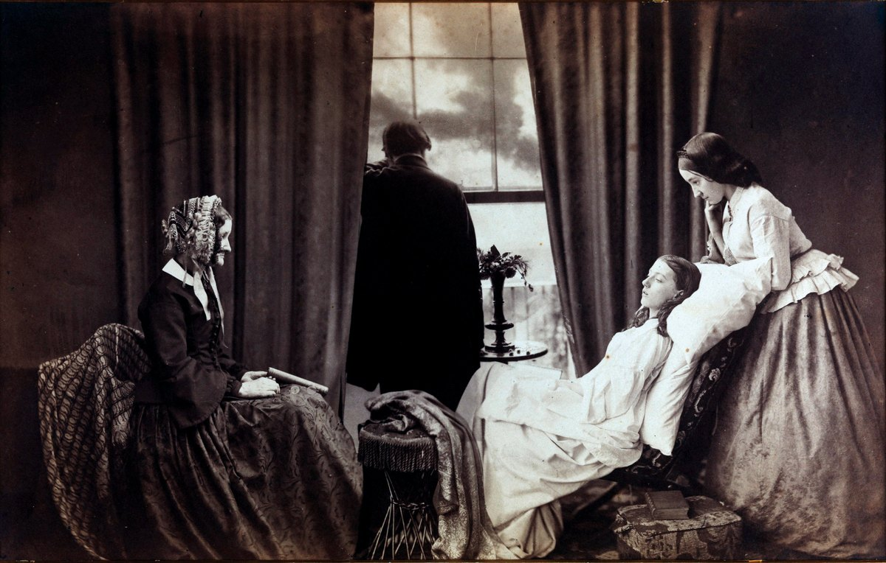
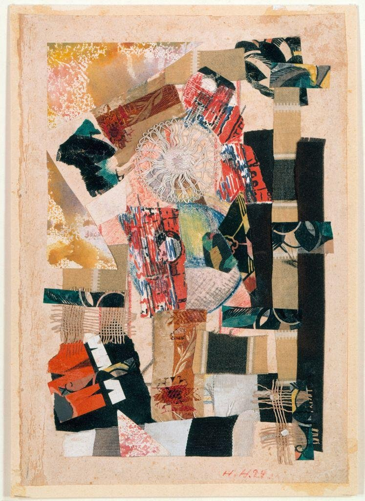
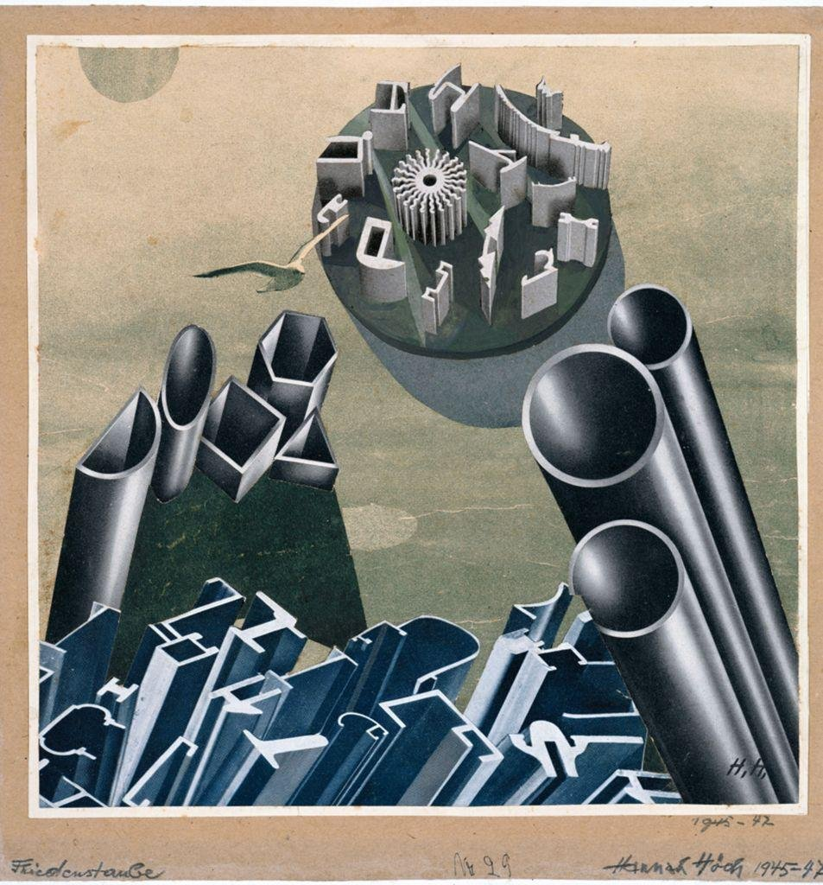
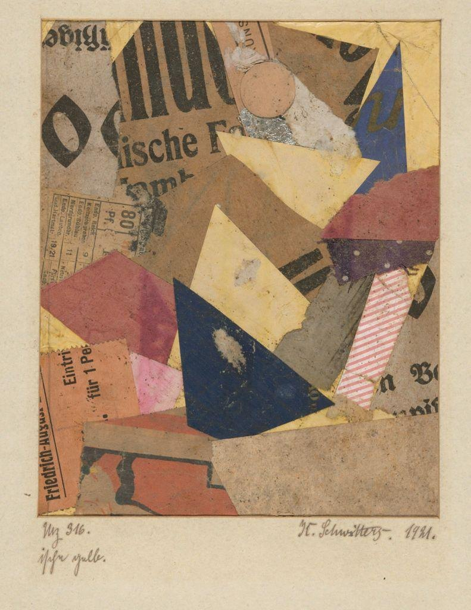

A digital collage is built the same way you would stack cut paper on a table, except every piece lives on its own layer that you can move, resize, or hide without touching the pieces below it. Look at the photograph below: more than thirty separate pieces, each one its own negative, combined into one image.


In Pixlr E, each of those pieces would be a photo, cutout, or texture on its own layer, stacked in the Layers panel.
Collage is art made by combining separate pieces, cut or torn images, paper, found materials, into one new work. The word comes from the French coller, "to glue." Artists have built collages by hand for over a century, cutting paper with scissors and gluing it down. A photomontage is a specific kind of collage built from photographs, cut apart and recombined so the seams often stay visible on purpose.
In this course you build collage digitally. Instead of scissors and glue, you use:
- Layers instead of physical sheets of paper, each image or cutout on its own layer, stacked in order
- Masking instead of scissors, hiding part of a layer without deleting any pixels, so you can always adjust the edge
- Blend modes instead of glue, controlling how a layer's color mixes with the layers underneath it
The digital workflow is more forgiving than hand collage: nothing is glued down until you say so, and every cut can be undone.
Masking vs. erasing
A beginner instinct is to use the Eraser tool to remove the background around a cutout. That works, but it is permanent: erased pixels are gone. A layer mask does the same visual job (hiding part of the layer) without deleting anything. Paint the mask black to hide, white to reveal, gray for partial transparency, and you can change your mind at any time by repainting it. Professional editors mask; they rarely erase.
Layers
Each image, cutout, or shape sits on its own stackable level. Reorder, hide, or edit one layer without disturbing the others.
Blend modes
A setting on a layer that changes how its pixels combine with the layers below: Multiply darkens, Screen lightens, Overlay boosts contrast, and more.
A blend mode is not a filter or a special effect layered on top; it is a rule for how a layer's pixels mathematically combine with the pixels underneath it. Look at the same two pictures layered three ways below. Nothing moved and no color was repainted; only the blend mode changed.



The galaxy photograph sits on the layer above the print, combined with the same blend mode math Pixlr E uses. Multiply and Screen are two of the blend modes you will find in its Layers panel. Images: Katsushika Hokusai, The Great Wave off Kanagawa, ca. 1831, and NASA, ESA, and the Hubble Heritage Team, Whirlpool Galaxy (M51). Both public domain. Source: Wikimedia Commons.

Collage became a serious art form in the early 1900s. Cubist painters began gluing scraps of newspaper and wallpaper directly onto their canvases, mixing "real" material with painted illusion. Not long after, an art movement called Dada pushed collage further.
Photomontage did not appear out of nowhere. Decades before Dada, some Victorian photographers were already combining separate negatives into one print, a technique called combination printing. The photograph below, built from five separate negatives combined into a single print, is an early, genuine example of the same basic idea you are practicing in this module: separate images, brought together into one composition.


Dada began in 1916 in Zurich, Switzerland, during World War I (1914 to 1918 A.D.). Many artists felt that the war had shown reason and tradition to be a failure, so Dada artists made work that was intentionally strange, chaotic, and rule-breaking. One of the tools they used was photomontage, cutting up photographs from magazines and newspapers and combining them into new, often unsettling images. Hannah Hoch, a German Dada artist, is known for photomontages that questioned ideas about gender, politics, and identity by combining fragments of human bodies and machine parts. Two of her collages are shown below, beside one by Kurt Schwitters, who was building collages from scraps of printed paper in Germany in the same years. You can see more of her work at moma.org or nga.gov.



A landmark example is Hannah Höch's Cut with the Kitchen Knife Dada Through the Last Weimar Beer-Belly Cultural Epoch of Germany (1919), a dense photomontage cut from newspapers and magazines. This work is still under copyright, so view it on the museum-education site Smarthistory: Höch, Cut with the Kitchen Knife (Smarthistory).
Dada did not last long as a movement, but its ideas spread. It helped lead directly into Surrealism, which you will study in Module 19, and into later movements that valued ideas and materials over traditional painting.
Collage is not about finding the perfect single image; it is about building meaning out of the space between images. Layers, masks, and blend modes are your digital scissors and glue, more flexible and more forgiving than the originals. In this module you make your first cuts.